<html><head><style>body { margin: 20px; }table { border-collapse: collapse; width: 100%; margin: auto; table-layout: fixed; }th, td { text-align: left; padding: 8px; word-wrap: break-word; border: 1px solid #ddd; }th { background-color: #f2f2f2; }th.image-column { width: 300px; }th.field-ref-column { width: 100px; }th.data-item-column { width: 30%; }th.field-column { width: 20%; }th.cms-column { width: 15%; }th.categories-column { width: 15%; }th.returns-column { width: 20%; }.last-updated-container { display: flex; align-items: center; }.last-updated-text { font-weight: bold; margin-right: 5px; }.repo-link { text-decoration: none; }.link-section a { margin-left: 10px; margin-right: 10px; }.guidance-notes { color: orange; font-size: 18px; }</style></head><body><script>
var returns_categories = {"Existing": {"colour": "#CCCCCC", "description": "Current returned data"}, "Local": {"colour": "#C5E625", "description": "Recorded locally but not currently included in any data collections"}, "1aDraft": {"colour": "#1CFCF2", "description": "Suggested new item for SSD"}, "1bDraft": {"colour": "#F57C1D", "description": "Suggested new item for one of the 1b projects"}, "1bSpecified": {"colour": "#FFC91E", "description": "Final specified item for one of the 1b projects"}};
</script><h1>Standard Safeguarding Dataset: Data Item Guidance</h1><p>This page shows detailed item-level guidance on data items within the Standard Safeguarding Dataset.</p><div style='padding: 2px;'><div class='last-updated-container'><span class='last-updated-text'>Last updated:</span><span class='last-updated-date'>10-07-2023 20:02</span><div class='link-section'><a href='https://github.com/data-to-insight/ssd-data-model/blob/main/README.md' class='repo-link'> | SSD Github</a><a href='https://data-to-insight.github.io/ssd-data-model/index.html' class='repo-link'> | Object Concept Model</a><a href='https://data-to-insight.github.io/ssd-data-model/guidance.html' class='repo-link'> | Data Item Guidance</a><a href='https://data-to-insight.github.io/ssd-data-model/existingreturnsmap.html' class='repo-link'> | Existing returns maps</a><a href='https://forms.office.com/e/UysrcGApJ1' class='repo-link'> | Submit Change Request</a></div></div><h1>Objects Overview:  <span class='guidance-notes'>(+DfE Data Item Guidance Texts)</span></h1><p>Right click and open the image in a new browser tab to zoom/magnify/scroll object level detail. Data item id numbers [AAA000A] enable specific item/field referencing.</p><p>This is work in progress subject to frequent change; Data objects and item definitions are published here to support iterative development. Diagrams consisdered as conceptual interpretations, not a true relational/representational model</p><div id='table-container'>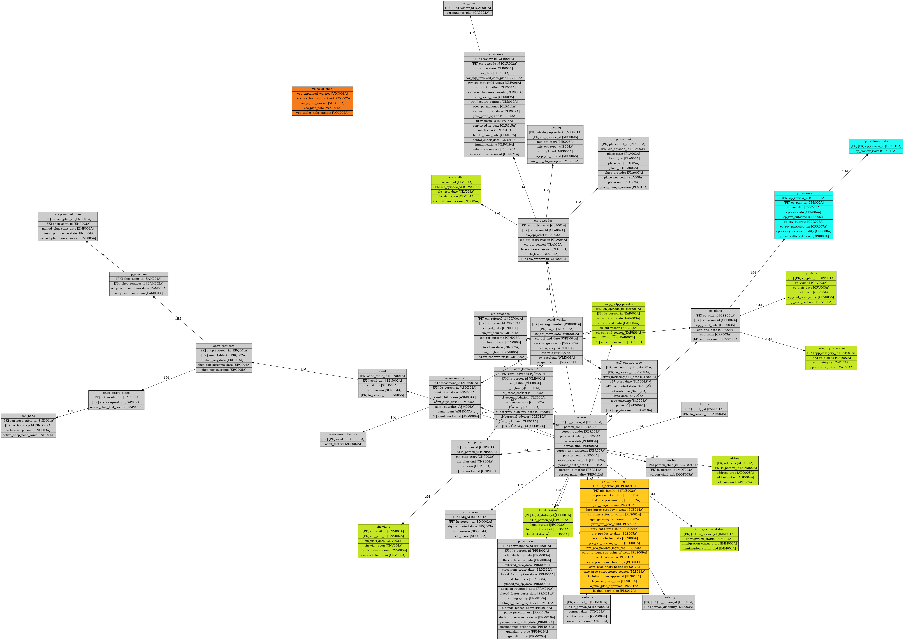<div id='legend-container' style='margin-top: 20px;'><h3>Object/Data item key:</h3><ul id='legend' style='background: rgba(255, 255, 255, 0.7); padding: 10px; border-radius: 5px; list-style: none; margin-top: 2px;'><li style='margin-bottom: 5px; font-size: 12px;'><div style='display: inline-block; width: 20px; height: 20px; margin-right: 5px; background: #CCCCCC;'></div>Existing - Current returned data</li><li style='margin-bottom: 5px; font-size: 12px;'><div style='display: inline-block; width: 20px; height: 20px; margin-right: 5px; background: #C5E625;'></div>Local - Recorded locally but not currently included in any data collections</li><li style='margin-bottom: 5px; font-size: 12px;'><div style='display: inline-block; width: 20px; height: 20px; margin-right: 5px; background: #1CFCF2;'></div>1aDraft - Suggested new item for SSD</li><li style='margin-bottom: 5px; font-size: 12px;'><div style='display: inline-block; width: 20px; height: 20px; margin-right: 5px; background: #F57C1D;'></div>1bDraft - Suggested new item for one of the 1b projects</li><li style='margin-bottom: 5px; font-size: 12px;'><div style='display: inline-block; width: 20px; height: 20px; margin-right: 5px; background: #FFC91E;'></div>1bSpecified - Final specified item for one of the 1b projects</li></ul><p>Note: Colour identifiers on Overview image indicate presence of <i>at least</i> one known change. See below tables for the item level changes/additions with granular colour-coding.</p></div></div></div><h1>Object Data Points Overview<span class='guidance-notes'>(DfE Data Item Guidance Notes)</span>:</h1><div><h2 style='text-align: left; margin-top: 20px;'>Object name: category_of_abuse</h2><div style='display: flex; align-items: flex-start;'>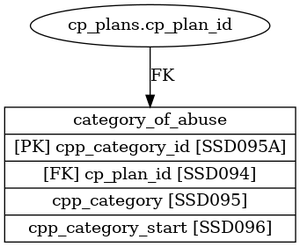<div style='padding-bottom: 50px;'><table style='border-collapse: collapse; border: none;'><colgroup><col style='width: 12%;'/><col style='width: 25%;'/><col style='width: 55%;'/><col style='width: 8%;'/></colgroup><tr><th class='item-ref-column'>Item Ref</th><th class='data-item-column'>Data Item Name</th><th class='field-column'>Guidance</th><th class='returns-column'>Returns</th></tr><tr class="row-CAT001A"><td>CAT001A</td><td>cpp_category_id</td><td>None</td><td></td></tr><tr class="row-CAT002A"><td>CAT002A</td><td>cp_plan_id</td><td>See CPP001A</td><td></td></tr><tr class="row-CAT003A"><td>CAT003A</td><td>cpp_category</td><td>None</td><td>CINcensus</td></tr><tr class="row-CAT004A"><td>CAT004A</td><td>cpp_category_start</td><td>None</td><td>Local</td></tr></table></div></div></div><hr style='border: none; border-top: 1px solid #ddd; margin-bottom: 20px;'><div><h2 style='text-align: left; margin-top: 20px;'>Object name: ehcp_active_plans</h2><div style='display: flex; align-items: flex-start;'>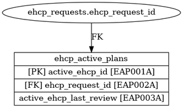<div style='padding-bottom: 50px;'><table style='border-collapse: collapse; border: none;'><colgroup><col style='width: 12%;'/><col style='width: 25%;'/><col style='width: 55%;'/><col style='width: 8%;'/></colgroup><tr><th class='item-ref-column'>Item Ref</th><th class='data-item-column'>Data Item Name</th><th class='field-column'>Guidance</th><th class='returns-column'>Returns</th></tr><tr class="row-EAP001A"><td>EAP001A</td><td>active_ehcp_id</td><td>#N/A</td><td></td></tr><tr class="row-EAP002A"><td>EAP002A</td><td>ehcp_request_id</td><td>#N/A</td><td></td></tr><tr class="row-EAP003A"><td>EAP003A</td><td>active_ehcp_last_review</td><td>#N/A</td><td>SEN2</td></tr></table></div></div></div><hr style='border: none; border-top: 1px solid #ddd; margin-bottom: 20px;'><div><h2 style='text-align: left; margin-top: 20px;'>Object name: early_help_episodes</h2><div style='display: flex; align-items: flex-start;'>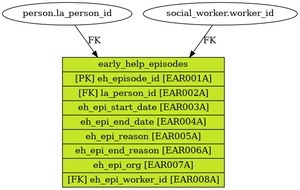<div style='padding-bottom: 50px;'><table style='border-collapse: collapse; border: none;'><colgroup><col style='width: 12%;'/><col style='width: 25%;'/><col style='width: 55%;'/><col style='width: 8%;'/></colgroup><tr><th class='item-ref-column'>Item Ref</th><th class='data-item-column'>Data Item Name</th><th class='field-column'>Guidance</th><th class='returns-column'>Returns</th></tr><tr class="row-EAR001A"><td>EAR001A</td><td>eh_episode_id</td><td>Early Help Episode unique ID from system or auto-generated as part of export.</td><td></td></tr><tr class="row-EAR002A"><td>EAR002A</td><td>la_person_id</td><td>See PER001A</td><td>SSDA903, CINcensus</td></tr><tr class="row-EAR003A"><td>EAR003A</td><td>eh_epi_start_date</td><td>Date Early Help Episode Started</td><td>AnnexA</td></tr><tr class="row-EAR004A"><td>EAR004A</td><td>eh_epi_end_date</td><td>Date Early Help Episode Ended</td><td>AnnexA</td></tr><tr class="row-EAR005A"><td>EAR005A</td><td>eh_epi_reason</td><td>None</td><td>ADCS_SP</td></tr><tr class="row-EAR006A"><td>EAR006A</td><td>eh_epi_end_reason</td><td>Outcomes met/ Step-up/ NFA</td><td>ADCS_SP</td></tr><tr class="row-EAR007A"><td>EAR007A</td><td>eh_epi_org</td><td>Organisation responsible for Early Help provision</td><td>AnnexA</td></tr><tr class="row-EAR008A"><td>EAR008A</td><td>eh_epi_worker_id</td><td>Allocated worker responsible for Early Help provision</td><td>Local</td></tr></table></div></div></div><hr style='border: none; border-top: 1px solid #ddd; margin-bottom: 20px;'><div><h2 style='text-align: left; margin-top: 20px;'>Object name: social_worker</h2><div style='display: flex; align-items: flex-start;'>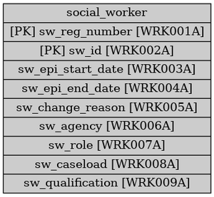<div style='padding-bottom: 50px;'><table style='border-collapse: collapse; border: none;'><colgroup><col style='width: 12%;'/><col style='width: 25%;'/><col style='width: 55%;'/><col style='width: 8%;'/></colgroup><tr><th class='item-ref-column'>Item Ref</th><th class='data-item-column'>Data Item Name</th><th class='field-column'>Guidance</th><th class='returns-column'>Returns</th></tr><tr class="row-WRK001A"><td>WRK001A</td><td>sw_reg_number</td><td>None</td><td></td></tr><tr class="row-WRK002A"><td>WRK002A</td><td>sw_id</td><td>None</td><td>SSDA903</td></tr><tr class="row-WRK003A"><td>WRK003A</td><td>sw_epi_start_date</td><td>None</td><td>SSDA903</td></tr><tr class="row-WRK004A"><td>WRK004A</td><td>sw_epi_end_date</td><td>None</td><td>SSDA903</td></tr><tr class="row-WRK005A"><td>WRK005A</td><td>sw_change_reason</td><td>None</td><td>SSDA903</td></tr><tr class="row-WRK006A"><td>WRK006A</td><td>sw_agency</td><td>None</td><td>CSCWF</td></tr><tr class="row-WRK007A"><td>WRK007A</td><td>sw_role</td><td>None</td><td>CSCWF</td></tr><tr class="row-WRK008A"><td>WRK008A</td><td>sw_caseload</td><td>None</td><td>CSCWF</td></tr><tr class="row-WRK009A"><td>WRK009A</td><td>sw_qualification</td><td>None</td><td>CSCWF</td></tr></table></div></div></div><hr style='border: none; border-top: 1px solid #ddd; margin-bottom: 20px;'><div><h2 style='text-align: left; margin-top: 20px;'>Object name: sdq_scores</h2><div style='display: flex; align-items: flex-start;'>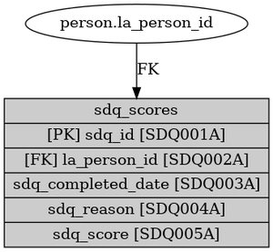<div style='padding-bottom: 50px;'><table style='border-collapse: collapse; border: none;'><colgroup><col style='width: 12%;'/><col style='width: 25%;'/><col style='width: 55%;'/><col style='width: 8%;'/></colgroup><tr><th class='item-ref-column'>Item Ref</th><th class='data-item-column'>Data Item Name</th><th class='field-column'>Guidance</th><th class='returns-column'>Returns</th></tr><tr class="row-SDQ001A"><td>SDQ001A</td><td>sdq_id</td><td>None</td><td></td></tr><tr class="row-SDQ002A"><td>SDQ002A</td><td>la_person_id</td><td>See PER001A</td><td>SSDA903, CINcensus</td></tr><tr class="row-SDQ003A"><td>SDQ003A</td><td>sdq_completed_date</td><td>None</td><td>Local</td></tr><tr class="row-SDQ004A"><td>SDQ004A</td><td>sdq_reason</td><td>None</td><td>SSDA903</td></tr><tr class="row-SDQ005A"><td>SDQ005A</td><td>sdq_score</td><td>None</td><td>SSDA903</td></tr></table></div></div></div><hr style='border: none; border-top: 1px solid #ddd; margin-bottom: 20px;'><div><h2 style='text-align: left; margin-top: 20px;'>Object name: assessments</h2><div style='display: flex; align-items: flex-start;'>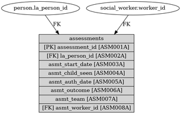<div style='padding-bottom: 50px;'><table style='border-collapse: collapse; border: none;'><colgroup><col style='width: 12%;'/><col style='width: 25%;'/><col style='width: 55%;'/><col style='width: 8%;'/></colgroup><tr><th class='item-ref-column'>Item Ref</th><th class='data-item-column'>Data Item Name</th><th class='field-column'>Guidance</th><th class='returns-column'>Returns</th></tr><tr class="row-ASM001A"><td>ASM001A</td><td>assessment_id</td><td>Assessment unique ID from system or auto-generated as part of export. Under the Children Act 1989, local authorities are required to provide services for children in need for the purposes of safeguarding and promoting their welfare. Local authorities undertake assessments of the needs of individual children to determine what services to provide and action to take.
Assessments should be recorded only at significant points such as the beginning of a new episode of need. It is not necessary to log new assessments at the point of closing an episode of need.
As set out in 'Working together to safeguard children' (2018), where the outcome of the assessment is continued through an agreed plan of action, the plan should be reviewed regularly, the outcomes of these reviews do not need to be recorded. However, if the situation changes significantly, this may result in the need for the completion of a new assessment, in which case this new assessment should be recorded.
Include all assessments that fall entirely or partly in the 2022 to 2023 collection year, including those that had started but had not finished by 31 March 2023, and those that started prior to 1 April 2022 and were completed within the 2022 to 2023 collection year. Please note, if a child is referred to a local authority and has been classified as in need following an assessment they should be included in the children in need census, regardless of whether they are receiving youth offending or any other service.
Within one working day of a referral being received, a decision should be made about the type of response required. The maximum timeframe from the assessment to arrive at a decision on the action to be taken should be no longer than 45 working days from the point of referral. This should be recorded as the end date of the assessment. Assessments may lead to no further action, the direct provision of services, and section 47 enquiries. See 'Working together to safeguard children' for further information.
There must always be an assessment actual start date, but if the assessment authorisation date falls after the end of the census year, it should be left blank. The assessment internal review point date is optional.</td><td></td></tr><tr class="row-ASM002A"><td>ASM002A</td><td>la_person_id</td><td>See PER001A</td><td>SSDA903, CINcensus</td></tr><tr class="row-ASM003A"><td>ASM003A</td><td>asmt_start_date</td><td>Enter the date the assessment actually started. This is the actual start date of the continuous assessment.</td><td>CINcensus</td></tr><tr class="row-ASM004A"><td>ASM004A</td><td>asmt_child_seen</td><td>Was the child seen during the Assessment process?</td><td>AnnexA</td></tr><tr class="row-ASM005A"><td>ASM005A</td><td>asmt_auth_date</td><td>Enter the actual date on which an assessment is completed and authorised, according to the formatting covered in the general notes. This is the date the assessment is completed and authorised.
An assessment is deemed to be completed once the social worker has informed, in writing, all the relevant agencies and the family of their decisions and if the child is a child in need, of the plan for providing support/ or once the assessment has been discussed with the child’s family (or carers) and the team manager has viewed and authorised the assessment.</td><td>CINcensus</td></tr><tr class="row-ASM006A"><td>ASM006A</td><td>asmt_outcome</td><td>The outcomes may be as follows: - No further action;
- Additional support which can be provided through universal services and single service provision or the Early Help assessment process;
- The development of a multi-agency Child in Need plan for the provision of child in need services to promote the child's health and development;
- Specialist assessment for a more in-depth understanding of the child's needs and circumstances;
- Undertaking a Strategy Discussion/Meeting, a Section 47 child protection enquiry;
- Emergency action to protect a child</td><td>AnnexA</td></tr><tr class="row-ASM007A"><td>ASM007A</td><td>asmt_team</td><td>Allocated Team responsible for completing Assessment</td><td>AnnexA</td></tr><tr class="row-ASM008A"><td>ASM008A</td><td>asmt_worker_id</td><td>Allocated worker responsible for completing Assessment</td><td>AnnexA</td></tr></table></div></div></div><hr style='border: none; border-top: 1px solid #ddd; margin-bottom: 20px;'><div><h2 style='text-align: left; margin-top: 20px;'>Object name: cla_reviews</h2><div style='display: flex; align-items: flex-start;'>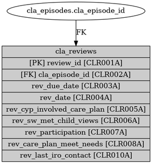<div style='padding-bottom: 50px;'><table style='border-collapse: collapse; border: none;'><colgroup><col style='width: 12%;'/><col style='width: 25%;'/><col style='width: 55%;'/><col style='width: 8%;'/></colgroup><tr><th class='item-ref-column'>Item Ref</th><th class='data-item-column'>Data Item Name</th><th class='field-column'>Guidance</th><th class='returns-column'>Returns</th></tr><tr class="row-CLR001A"><td>CLR001A</td><td>review_id</td><td>None</td><td></td></tr><tr class="row-CLR002A"><td>CLR002A</td><td>cla_episode_id</td><td>None</td><td></td></tr><tr class="row-CLR003A"><td>CLR003A</td><td>rev_due_date</td><td>None</td><td>Local</td></tr><tr class="row-CLR004A"><td>CLR004A</td><td>rev_date</td><td>None</td><td>SSDA903, AnnexA</td></tr><tr class="row-CLR005A"><td>CLR005A</td><td>rev_cyp_involved_care_plan</td><td>None</td><td>1aDraft</td></tr><tr class="row-CLR006A"><td>CLR006A</td><td>rev_sw_met_child_views</td><td>None</td><td>1aDraft</td></tr><tr class="row-CLR007A"><td>CLR007A</td><td>rev_participation</td><td>None</td><td>SSDA903</td></tr><tr class="row-CLR008A"><td>CLR008A</td><td>rev_care_plan_meet_needs</td><td>None</td><td>1aDraft</td></tr><tr class="row-CLR009A"><td>CLR009A</td><td>rev_perm_plan</td><td>None</td><td>AnnexA</td></tr><tr class="row-CLR010A"><td>CLR010A</td><td>rev_last_iro_contact</td><td>None</td><td>AnnexA</td></tr><tr class="row-CLR011A"><td>CLR011A</td><td>prev_permanence</td><td>None</td><td>SSDA903</td></tr><tr class="row-CLR012A"><td>CLR012A</td><td>prev_perm_order_date</td><td>None</td><td>SSDA903</td></tr><tr class="row-CLR013A"><td>CLR013A</td><td>prev_perm_option</td><td>None</td><td>SSDA903</td></tr><tr class="row-CLR014A"><td>CLR014A</td><td>prev_perm_la</td><td>None</td><td>SSDA903</td></tr><tr class="row-CLR015A"><td>CLR015A</td><td>convicted_in_year</td><td>None</td><td>SSDA903</td></tr><tr class="row-CLR016A"><td>CLR016A</td><td>health_check</td><td>None</td><td>SSDA903</td></tr><tr class="row-CLR017A"><td>CLR017A</td><td>health_asmt_date</td><td>None</td><td>SSDA903, AnnexA</td></tr><tr class="row-CLR018A"><td>CLR018A</td><td>dental_check_date</td><td>None</td><td>SSDA903, AnnexA</td></tr><tr class="row-CLR019A"><td>CLR019A</td><td>immunisations</td><td>None</td><td>SSDA903</td></tr><tr class="row-CLR020A"><td>CLR020A</td><td>substance_misuse</td><td>None</td><td>SSDA903</td></tr><tr class="row-CLR021A"><td>CLR021A</td><td>intervention_received</td><td>None</td><td>SSDA903</td></tr></table></div></div></div><hr style='border: none; border-top: 1px solid #ddd; margin-bottom: 20px;'><div><h2 style='text-align: left; margin-top: 20px;'>Object name: assessment_factors</h2><div style='display: flex; align-items: flex-start;'>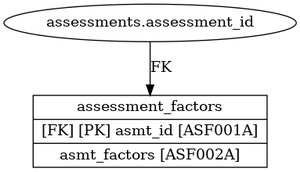<div style='padding-bottom: 50px;'><table style='border-collapse: collapse; border: none;'><colgroup><col style='width: 12%;'/><col style='width: 25%;'/><col style='width: 55%;'/><col style='width: 8%;'/></colgroup><tr><th class='item-ref-column'>Item Ref</th><th class='data-item-column'>Data Item Name</th><th class='field-column'>Guidance</th><th class='returns-column'>Returns</th></tr><tr class="row-ASF001A"><td>ASF001A</td><td>asmt_id</td><td>See ASM001A</td><td></td></tr><tr class="row-ASF002A"><td>ASF002A</td><td>asmt_factors</td><td>Record the factors as understood at the end of the assessment relevant to:
• the impairment of the child’s health and development (‘Child’);
• the parent(s)/carer(s) capacity to respond to the child’s needs (‘Parenting capacity’);
• other people in the family/household, for example, a sibling or lodger (‘Other’). This applies to all assessments completed. The information should be recorded at the end of the assessment and all factors which are felt to be relevant to the child’s assessment should be reported from the list below. This includes factors where services are put in place to mitigate the effect of the factor as well as factors which need to be taken into account in providing other support. Please only record factors which are currently an issue of concern. For example, if domestic violence is a current issue of concern, please record it. If domestic violence was an issue in a previous relationship and is not an issue of concern now, then do not record it. Factors such as mental health concerns do not need to be confined to medically defined conditions. Rather this is intended, for example, to record where the professional, as part of the assessment process, feels that mental health is of concern to the child’s health and development or parenting capacity to respond to the child’s needs. Code 21 (no factors identified) should only be used for cases which are closed following assessments which result in no further action (closure code RC8 and RC9) and should be the only factor listed. However, if factors are identified for cases which are closed following assessment, please record these selecting from the list above, but excluding code 21. If a section 47 enquiry has commenced on a case, then code 21 (no factors identified) should not be reported at the end of assessment even if it was found that the allegations that triggered the section 47 enquiry are unfounded. Instead, the relevant factors that were considered at the assessment that initiated the section 47 enquiry should be recorded. The case should then be closed using the reason for closure code: ‘RC7 - services ceased for any other reason, including child no longer in need’, as at the point the section 47 started the child would be counted as a child in need even if the case closed shortly after. Code 21 should only be used in cases where the section 47 enquiry was automatically triggered alongside the assessment and both the assessment and section 47 resulted in no further action. More detailed descriptions and definitions of the factors are provided in the ‘Additional guide on the factors identified at the end of assessment’ for more information. The additional guide is available as part of the Children in need census: guide to submitting data.</td><td>CINcensus</td></tr></table></div></div></div><hr style='border: none; border-top: 1px solid #ddd; margin-bottom: 20px;'><div><h2 style='text-align: left; margin-top: 20px;'>Object name: immigration_status</h2><div style='display: flex; align-items: flex-start;'>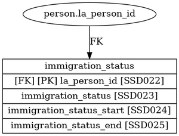<div style='padding-bottom: 50px;'><table style='border-collapse: collapse; border: none;'><colgroup><col style='width: 12%;'/><col style='width: 25%;'/><col style='width: 55%;'/><col style='width: 8%;'/></colgroup><tr><th class='item-ref-column'>Item Ref</th><th class='data-item-column'>Data Item Name</th><th class='field-column'>Guidance</th><th class='returns-column'>Returns</th></tr><tr class="row-IMM001A"><td>IMM001A</td><td>la_person_id</td><td>See PER001A</td><td>SSDA903, CINcensus</td></tr><tr class="row-IMM002A"><td>IMM002A</td><td>immigration_status</td><td>Immigration Status e.g. Unaccompanied Asylum Seeking Child</td><td>Local</td></tr><tr class="row-IMM003A"><td>IMM003A</td><td>immigration_status_start</td><td>Start Date of Immigration Status</td><td>Local</td></tr><tr class="row-IMM004A"><td>IMM004A</td><td>immigration_status_end</td><td>End Date of Immigration Status</td><td>Local</td></tr></table></div></div></div><hr style='border: none; border-top: 1px solid #ddd; margin-bottom: 20px;'><div><h2 style='text-align: left; margin-top: 20px;'>Object name: contacts</h2><div style='display: flex; align-items: flex-start;'>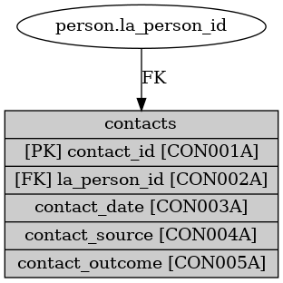<div style='padding-bottom: 50px;'><table style='border-collapse: collapse; border: none;'><colgroup><col style='width: 12%;'/><col style='width: 25%;'/><col style='width: 55%;'/><col style='width: 8%;'/></colgroup><tr><th class='item-ref-column'>Item Ref</th><th class='data-item-column'>Data Item Name</th><th class='field-column'>Guidance</th><th class='returns-column'>Returns</th></tr><tr class="row-CON001A"><td>CON001A</td><td>contact_id</td><td>Contact Record unique ID from system or auto-generated as part of export.</td><td></td></tr><tr class="row-CON002A"><td>CON002A</td><td>la_person_id</td><td>See PER001A</td><td>SSDA903, CINcensus</td></tr><tr class="row-CON003A"><td>CON003A</td><td>contact_date</td><td>Date Contact received into LA</td><td>AnnexA</td></tr><tr class="row-CON004A"><td>CON004A</td><td>contact_source</td><td>For each new contact, record the source of contact from the list.
Where there is more than one contact for the same child on the same day, the first contact should be recorded and it is this contact source that should be recorded here.</td><td>AnnexA</td></tr><tr class="row-CON005A"><td>CON005A</td><td>contact_outcome</td><td>EH Referral/ CIN Referral</td><td>ADCS_SP</td></tr></table></div></div></div><hr style='border: none; border-top: 1px solid #ddd; margin-bottom: 20px;'><div><h2 style='text-align: left; margin-top: 20px;'>Object name: ehcp_named_plan</h2><div style='display: flex; align-items: flex-start;'>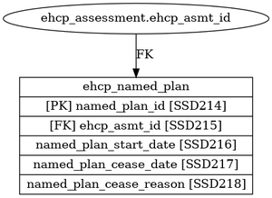<div style='padding-bottom: 50px;'><table style='border-collapse: collapse; border: none;'><colgroup><col style='width: 12%;'/><col style='width: 25%;'/><col style='width: 55%;'/><col style='width: 8%;'/></colgroup><tr><th class='item-ref-column'>Item Ref</th><th class='data-item-column'>Data Item Name</th><th class='field-column'>Guidance</th><th class='returns-column'>Returns</th></tr><tr class="row-ENP001A"><td>ENP001A</td><td>named_plan_id</td><td>#N/A</td><td></td></tr><tr class="row-ENP002A"><td>ENP002A</td><td>ehcp_asmt_id</td><td>#N/A</td><td></td></tr><tr class="row-ENP003A"><td>ENP003A</td><td>named_plan_start_date</td><td>#N/A</td><td>SEN2</td></tr><tr class="row-ENP004A"><td>ENP004A</td><td>named_plan_cease_date</td><td>#N/A</td><td>SEN2</td></tr><tr class="row-ENP005A"><td>ENP005A</td><td>named_plan_cease_reason</td><td>#N/A</td><td>SEN2</td></tr></table></div></div></div><hr style='border: none; border-top: 1px solid #ddd; margin-bottom: 20px;'><div><h2 style='text-align: left; margin-top: 20px;'>Object name: permanence</h2><div style='display: flex; align-items: flex-start;'>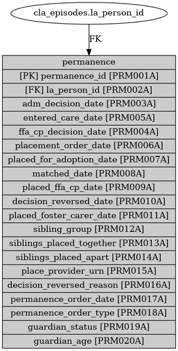<div style='padding-bottom: 50px;'><table style='border-collapse: collapse; border: none;'><colgroup><col style='width: 12%;'/><col style='width: 25%;'/><col style='width: 55%;'/><col style='width: 8%;'/></colgroup><tr><th class='item-ref-column'>Item Ref</th><th class='data-item-column'>Data Item Name</th><th class='field-column'>Guidance</th><th class='returns-column'>Returns</th></tr><tr class="row-PRM001A"><td>PRM001A</td><td>permanence_id</td><td>None</td><td></td></tr><tr class="row-PRM002A"><td>PRM002A</td><td>la_person_id</td><td>See PER001A</td><td>SSDA903, CINcensus</td></tr><tr class="row-PRM003A"><td>PRM003A</td><td>adm_decision_date</td><td>None</td><td>SSDA903, AnnexA, ASGLB</td></tr><tr class="row-PRM004A"><td>PRM004A</td><td>ffa_cp_decision_date</td><td>None</td><td>ASGLB</td></tr><tr class="row-PRM005A"><td>PRM005A</td><td>entered_care_date</td><td>None</td><td>SSDA903, AnnexA, ASGLB</td></tr><tr class="row-PRM006A"><td>PRM006A</td><td>placement_order_date</td><td>None</td><td>SSDA903, AnnexA, ASGLB</td></tr><tr class="row-PRM007A"><td>PRM007A</td><td>placed_for_adoption_date</td><td>None</td><td>SSDA903, AnnexA, ASGLB</td></tr><tr class="row-PRM008A"><td>PRM008A</td><td>matched_date</td><td>None</td><td>SSDA903, AnnexA, ASGLB</td></tr><tr class="row-PRM009A"><td>PRM009A</td><td>placed_ffa_cp_date</td><td>None</td><td>SSDA903, AnnexA, ASGLB</td></tr><tr class="row-PRM010A"><td>PRM010A</td><td>decision_reversed_date</td><td>None</td><td>AnnexA, ASGLB</td></tr><tr class="row-PRM011A"><td>PRM011A</td><td>placed_foster_carer_date</td><td>None</td><td>SSDA903, AnnexA, ASGLB</td></tr><tr class="row-PRM012A"><td>PRM012A</td><td>sibling_group</td><td>None</td><td>ASGLB</td></tr><tr class="row-PRM013A"><td>PRM013A</td><td>siblings_placed_together</td><td>None</td><td>ASGLB</td></tr><tr class="row-PRM014A"><td>PRM014A</td><td>siblings_placed_apart</td><td>None</td><td>ASGLB</td></tr><tr class="row-PRM015A"><td>PRM015A</td><td>place_provider_urn</td><td>None</td><td>SSDA903</td></tr><tr class="row-PRM016A"><td>PRM016A</td><td>decision_reversed_reason</td><td>None</td><td>SSDA903, AnnexA, ASGLB</td></tr><tr class="row-PRM017A"><td>PRM017A</td><td>permanence_order_date</td><td>None</td><td>SSDA903, AnnexA, ASGLB</td></tr><tr class="row-PRM018A"><td>PRM018A</td><td>permanence_order_type</td><td>None</td><td>SSDA903, ASGLB</td></tr><tr class="row-PRM019A"><td>PRM019A</td><td>guardian_status</td><td>None</td><td>ASGLB</td></tr><tr class="row-PRM020A"><td>PRM020A</td><td>guardian_age</td><td>None</td><td>ASGLB</td></tr></table></div></div></div><hr style='border: none; border-top: 1px solid #ddd; margin-bottom: 20px;'><div><h2 style='text-align: left; margin-top: 20px;'>Object name: cp_visits</h2><div style='display: flex; align-items: flex-start;'>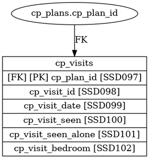<div style='padding-bottom: 50px;'><table style='border-collapse: collapse; border: none;'><colgroup><col style='width: 12%;'/><col style='width: 25%;'/><col style='width: 55%;'/><col style='width: 8%;'/></colgroup><tr><th class='item-ref-column'>Item Ref</th><th class='data-item-column'>Data Item Name</th><th class='field-column'>Guidance</th><th class='returns-column'>Returns</th></tr><tr class="row-CPV001A"><td>CPV001A</td><td>cp_plan_id</td><td>None</td><td></td></tr><tr class="row-CPV002A"><td>CPV002A</td><td>cp_visit_id</td><td>None</td><td></td></tr><tr class="row-CPV003A"><td>CPV003A</td><td>cp_visit_date</td><td>None</td><td>AnnexA</td></tr><tr class="row-CPV004A"><td>CPV004A</td><td>cp_visit_seen</td><td>None</td><td>Local</td></tr><tr class="row-CPV005A"><td>CPV005A</td><td>cp_visit_seen_alone</td><td>None</td><td>AnnexA</td></tr><tr class="row-CPV006A"><td>CPV006A</td><td>cp_visit_bedroom</td><td>None</td><td>Local</td></tr></table></div></div></div><hr style='border: none; border-top: 1px solid #ddd; margin-bottom: 20px;'><div><h2 style='text-align: left; margin-top: 20px;'>Object name: send</h2><div style='display: flex; align-items: flex-start;'>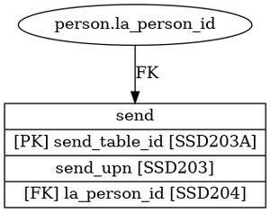<div style='padding-bottom: 50px;'><table style='border-collapse: collapse; border: none;'><colgroup><col style='width: 12%;'/><col style='width: 25%;'/><col style='width: 55%;'/><col style='width: 8%;'/></colgroup><tr><th class='item-ref-column'>Item Ref</th><th class='data-item-column'>Data Item Name</th><th class='field-column'>Guidance</th><th class='returns-column'>Returns</th></tr><tr class="row-SEN001A"><td>SEN001A</td><td>send_table_id</td><td>#N/A</td><td></td></tr><tr class="row-SEN002A"><td>SEN002A</td><td>send_upn</td><td>#N/A</td><td></td></tr><tr class="row-SEN003A"><td>SEN003A</td><td>send_uln</td><td>#N/A</td><td></td></tr><tr class="row-SEN004A"><td>SEN004A</td><td>upn_unknown</td><td>#N/A</td><td></td></tr><tr class="row-SEN005A"><td>SEN005A</td><td>la_person_id</td><td>#N/A</td><td>SSDA903, CINcensus</td></tr></table></div></div></div><hr style='border: none; border-top: 1px solid #ddd; margin-bottom: 20px;'><div><h2 style='text-align: left; margin-top: 20px;'>Object name: cla_visits</h2><div style='display: flex; align-items: flex-start;'>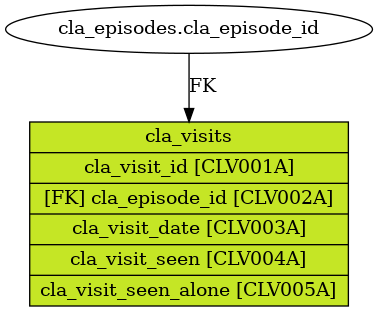<div style='padding-bottom: 50px;'><table style='border-collapse: collapse; border: none;'><colgroup><col style='width: 12%;'/><col style='width: 25%;'/><col style='width: 55%;'/><col style='width: 8%;'/></colgroup><tr><th class='item-ref-column'>Item Ref</th><th class='data-item-column'>Data Item Name</th><th class='field-column'>Guidance</th><th class='returns-column'>Returns</th></tr><tr class="row-CLV001A"><td>CLV001A</td><td>cla_visit_id</td><td>None</td><td></td></tr><tr class="row-CLV002A"><td>CLV002A</td><td>cla_episode_id</td><td>None</td><td></td></tr><tr class="row-CLV003A"><td>CLV003A</td><td>cla_visit_date</td><td>None</td><td>AnnexA</td></tr><tr class="row-CLV004A"><td>CLV004A</td><td>cla_visit_seen</td><td>None</td><td>Local</td></tr><tr class="row-CLV005A"><td>CLV005A</td><td>cla_visit_seen_alone</td><td>None</td><td>Local</td></tr></table></div></div></div><hr style='border: none; border-top: 1px solid #ddd; margin-bottom: 20px;'><div><h2 style='text-align: left; margin-top: 20px;'>Object name: family</h2><div style='display: flex; align-items: flex-start;'>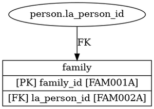<div style='padding-bottom: 50px;'><table style='border-collapse: collapse; border: none;'><colgroup><col style='width: 12%;'/><col style='width: 25%;'/><col style='width: 55%;'/><col style='width: 8%;'/></colgroup><tr><th class='item-ref-column'>Item Ref</th><th class='data-item-column'>Data Item Name</th><th class='field-column'>Guidance</th><th class='returns-column'>Returns</th></tr><tr class="row-FAM001A"><td>FAM001A</td><td>family_id</td><td>For linking to adoptive family or Family-level interventions e.g. Early Help</td><td>ASGLB, AnnexA</td></tr><tr class="row-FAM002A"><td>FAM002A</td><td>la_person_id</td><td>See PER001A</td><td>SSDA903, CINcensus</td></tr></table></div></div></div><hr style='border: none; border-top: 1px solid #ddd; margin-bottom: 20px;'><div><h2 style='text-align: left; margin-top: 20px;'>Object name: cp_reviews_risks</h2><div style='display: flex; align-items: flex-start;'>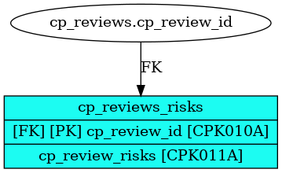<div style='padding-bottom: 50px;'><table style='border-collapse: collapse; border: none;'><colgroup><col style='width: 12%;'/><col style='width: 25%;'/><col style='width: 55%;'/><col style='width: 8%;'/></colgroup><tr><th class='item-ref-column'>Item Ref</th><th class='data-item-column'>Data Item Name</th><th class='field-column'>Guidance</th><th class='returns-column'>Returns</th></tr><tr class="row-CPK010A"><td>CPK010A</td><td>cp_review_id</td><td>None</td><td></td></tr><tr class="row-CPK011A"><td>CPK011A</td><td>cp_review_risks</td><td>None</td><td>1aDraft</td></tr></table></div></div></div><hr style='border: none; border-top: 1px solid #ddd; margin-bottom: 20px;'><div><h2 style='text-align: left; margin-top: 20px;'>Object name: legal_status</h2><div style='display: flex; align-items: flex-start;'>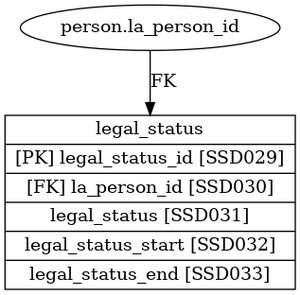<div style='padding-bottom: 50px;'><table style='border-collapse: collapse; border: none;'><colgroup><col style='width: 12%;'/><col style='width: 25%;'/><col style='width: 55%;'/><col style='width: 8%;'/></colgroup><tr><th class='item-ref-column'>Item Ref</th><th class='data-item-column'>Data Item Name</th><th class='field-column'>Guidance</th><th class='returns-column'>Returns</th></tr><tr class="row-LEG001A"><td>LEG001A</td><td>legal_status_id</td><td>Legal Status Record unique ID from system or auto-generated as part of export.</td><td></td></tr><tr class="row-LEG002A"><td>LEG002A</td><td>la_person_id</td><td>See PER001A</td><td>SSDA903, CINcensus</td></tr><tr class="row-LEG003A"><td>LEG003A</td><td>legal_status</td><td>The legal status code on the SSDA903 records the legal status underlying being ‘looked-after’. If a child is looked-after because it is accommodated, the legal status goes some way to describe (in legal terms at least) why the child is being looked after. There are many legal statuses arising from the Children Act, or the Youth Justice System, to which a child can be subject, but which have no bearing on whether a child is ‘looked-after’ or not. These are not recorded on the SSDA903, and no legal status codes are provided for them.
The renewal of an existing legal status does not automatically generate a new episode. If the legal status code does not change, a new episode is not required (unless there happens to be a change of placement at the same time).
Example: If a child is already looked-after under an interim care order, a renewal of the interim care order does not change the legal status and no new episode is required. However, if a child looked-after under an interim care order becomes the subject of a full care order, then a new episode is required to record the start of the full care order.
In certain circumstances a child being looked-after can have more than one ‘lookedafter’ legal status. In general, this happens when a child who is already ‘looked-after’ under a Children Act care order comes into contact with the Youth Justice System, and as a result is detained in local authority accommodation under a second legal status. Two legal statuses cannot be shown as current on SSDA903. In such cases the latest legal status should be recorded and the episode under the previous status should be closed
Example: A child who is already subject to a care order is remanded to local authority accommodation under Section 23 (1) of CYPA 1969. The care order episode should be closed, and a new episode should start under the “remanded to local authority accommodation” legal status code. When the episode under the remand status ends, a further episode under the care order legal status will start, unless the care order has been discharged.
We have attempted to identify and provide a code for every legal status which theoretically could underpin a child being ‘looked-after’. If future changes in legislation lead to new ‘looked-after’ legal statuses, we will provide new legal status codes. Our analysis of the use of the former legal status code 98 showed that in most cases such children were either not looked-after, or that another existing legal status was appropriate.
The ‘wardship’ legal status code was a possible legal status identified by some local authorities in the consultation exercise on the future of the SSDA903 codes for which we did not have an existing legal status. However, the use of this code was restricted to just a few exceptional cases where the High Court has exercised its residual power to make a child a ward of the High Court, and has directed that the child should be accommodated by a local authority. In practice such cases werefound to be so extremely rare, it was felt that the use of a separate code could not be warranted. If such a case should arise, it should be coded C2, as the practical effects are the same.</td><td>SSDA903, AnnexA</td></tr><tr class="row-LEG004A"><td>LEG004A</td><td>legal_status_start</td><td>Start Date of Legal Status</td><td>Local</td></tr><tr class="row-LEG005A"><td>LEG005A</td><td>legal_status_end</td><td>End Date of Legal Status</td><td>Local</td></tr></table></div></div></div><hr style='border: none; border-top: 1px solid #ddd; margin-bottom: 20px;'><div><h2 style='text-align: left; margin-top: 20px;'>Object name: care_plan</h2><div style='display: flex; align-items: flex-start;'>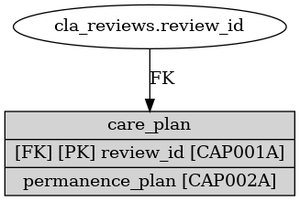<div style='padding-bottom: 50px;'><table style='border-collapse: collapse; border: none;'><colgroup><col style='width: 12%;'/><col style='width: 25%;'/><col style='width: 55%;'/><col style='width: 8%;'/></colgroup><tr><th class='item-ref-column'>Item Ref</th><th class='data-item-column'>Data Item Name</th><th class='field-column'>Guidance</th><th class='returns-column'>Returns</th></tr><tr class="row-CAP001A"><td>CAP001A</td><td>review_id</td><td>None</td><td></td></tr><tr class="row-CAP002A"><td>CAP002A</td><td>permanence_plan</td><td>None</td><td>AnnexA</td></tr></table></div></div></div><hr style='border: none; border-top: 1px solid #ddd; margin-bottom: 20px;'><div><h2 style='text-align: left; margin-top: 20px;'>Object name: cin_episodes</h2><div style='display: flex; align-items: flex-start;'>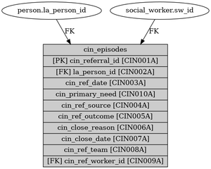<div style='padding-bottom: 50px;'><table style='border-collapse: collapse; border: none;'><colgroup><col style='width: 12%;'/><col style='width: 25%;'/><col style='width: 55%;'/><col style='width: 8%;'/></colgroup><tr><th class='item-ref-column'>Item Ref</th><th class='data-item-column'>Data Item Name</th><th class='field-column'>Guidance</th><th class='returns-column'>Returns</th></tr><tr class="row-CIN001A"><td>CIN001A</td><td>cin_referral_id</td><td>Referral Record unique ID from system or auto-generated as part of export.</td><td></td></tr><tr class="row-CIN002A"><td>CIN002A</td><td>la_person_id</td><td>See PER001A</td><td>SSDA903, CINcensus</td></tr><tr class="row-CIN003A"><td>CIN003A</td><td>cin_ref_date</td><td>Date of Referral</td><td>CINcensus, AnnexA</td></tr><tr class="row-CIN004A"><td>CIN004A</td><td>cin_ref_source</td><td>For each new referral, record the source of referral from the list.
Where there is more than one referral for the same child on the same day, the first referral should be recorded and it is this referral source that should be recorded here. The data should be returned for each year the episode remains open.</td><td>CINcensus, AnnexA</td></tr><tr class="row-CIN005A"><td>CIN005A</td><td>cin_ref_outcome</td><td>NFA/ Assessment/ Step-down</td><td>CINcensus, AnnexA</td></tr><tr class="row-CIN006A"><td>CIN006A</td><td>cin_close_reason</td><td>This is the reason the local authority stops providing services to the child.
Enter the reason that the case was closed from the code list.
- RC1 Adopted.
- RC2 Died.
- RC3 Child arrangements order.
- RC4 Special guardianship order.
- RC5 Transferred to services of another local authority.
- RC6 Transferred to adult social care services.
- RC7 Services ceased for any other reason, including child no longer in need.
- RC8 Case closed after assessment, no further action.
- RC9 Case closed after assessment, referred to early help.
If the case is still open then leave this item blank.
- ‘RC8 - case closed after assessment, no further action’ and ‘RC9 - case closed after assessment, referred to early help’.
The reason for closure code RC8 should be used by local authorities to categorise a case for a child who they assess following a referral, but for whom they do not provide services and whose case is subsequently closed. It should not be used for any other reason.
The reason for closure code RC9 should be used by local authorities to categorise a case for a child who they assess following a referral, but is subsequently referred to early help and whose case is then closed.
These are different from cases that were closed prior to assessment, at the referral stage; the referral no further action flag should be used in these cases (see section 4.3). The reason for closure codes RC8 and RC9 should not be used for cases that were closed prior to assessment, or for cases where services were provided following assessment.
In cases where the child has been assessed not to be in need after an assessment, the reason for closure code RC8 should be used. Where the child has been assessed not to be in need after an assessment and then referred to early help, the reason for closure code RC9 should be used. If a primary need code is retained on your system for these children, then this can be returned using the full code set listed in section 4.5. However, if you do not retain a primary need code for some or all of these children use code ‘N0’ for this field. This allows for children whose reference data is not completely entered on the system and whose need code is yet to be determined, or where the case is a referral that has been closed following assessment.
When the reason for closure code RC8 or RC9 is used the case should be closed on the same date as the assessment ends or, if this is not practical, as soon as possible afterwards.</td><td>CINcensus</td></tr><tr class="row-CIN007A"><td>CIN007A</td><td>cin_close_date</td><td>A case is closed if the local authority has no intention of taking any initiative with respect to the child or family concerned, unless the local authority receives new information that requires it to take some sort of action.
Enter the date that the case was closed, according to the formatting covered in the general notes. If the case is still open then leave this item blank. A children in need closure date can be the same as the referral date but, in practice, this should only very rarely occur. Closure date is not required for a referral that leads to no further action.
- Children in need closure in the case of adoption
When a child’s case is closed because of adoption (reason for closure code ‘RC1’), the children in need closure date will normally be the day when the court granted the adoption order.
It is recognised that an adoption case may sometimes remain open to allow all procedures to be completed. In this situation the census will allow for the case to extend up to one month after the date of the adoption order without having to open a new record. The need code would stay the same in these cases. Anything above one month will require a new record to be created. If a child remains in need after being adopted from care, then the new post-adoption child record should be opened with a children in need referral date that is the date of the court’s adoption order. If the child is receiving post-adoption support, it should be recorded in this new record.
- Children in need closure in the case of death
When a child is no longer in need because the child dies or an unborn child is stillborn (reason for closure code ‘RC2’), the closure date and the date of death recorded on the death certificate no longer need to match. It is recognised that the case may remain open for investigation and review procedures after the child dies; the date of death field allows local authorities to separately record the date of death and final case closure date in the census. This will allow local authorities to record the services they provide between the death and the case closure.</td><td>CINcensus</td></tr><tr class="row-CIN008A"><td>CIN008A</td><td>cin_ref_team</td><td>Allocated Team responsible for completing Referral</td><td>AnnexA</td></tr><tr class="row-CIN009A"><td>CIN009A</td><td>cin_ref_worker_id</td><td>Allocated worker responsible for completing Referral</td><td>AnnexA</td></tr></table></div></div></div><hr style='border: none; border-top: 1px solid #ddd; margin-bottom: 20px;'><div><h2 style='text-align: left; margin-top: 20px;'>Object name: ehcp_assessment</h2><div style='display: flex; align-items: flex-start;'>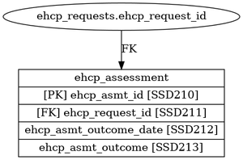<div style='padding-bottom: 50px;'><table style='border-collapse: collapse; border: none;'><colgroup><col style='width: 12%;'/><col style='width: 25%;'/><col style='width: 55%;'/><col style='width: 8%;'/></colgroup><tr><th class='item-ref-column'>Item Ref</th><th class='data-item-column'>Data Item Name</th><th class='field-column'>Guidance</th><th class='returns-column'>Returns</th></tr><tr class="row-EAM001A"><td>EAM001A</td><td>ehcp_asmt_id</td><td>#N/A</td><td></td></tr><tr class="row-EAM002A"><td>EAM002A</td><td>ehcp_request_id</td><td>#N/A</td><td></td></tr><tr class="row-EAM003A"><td>EAM003A</td><td>ehcp_asmt_outcome_date</td><td>#N/A</td><td>SEN2</td></tr><tr class="row-EAM004A"><td>EAM004A</td><td>ehcp_asmt_outcome</td><td>#N/A</td><td>SEN2</td></tr></table></div></div></div><hr style='border: none; border-top: 1px solid #ddd; margin-bottom: 20px;'><div><h2 style='text-align: left; margin-top: 20px;'>Object name: cp_plans</h2><div style='display: flex; align-items: flex-start;'>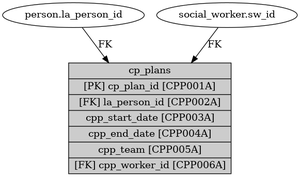<div style='padding-bottom: 50px;'><table style='border-collapse: collapse; border: none;'><colgroup><col style='width: 12%;'/><col style='width: 25%;'/><col style='width: 55%;'/><col style='width: 8%;'/></colgroup><tr><th class='item-ref-column'>Item Ref</th><th class='data-item-column'>Data Item Name</th><th class='field-column'>Guidance</th><th class='returns-column'>Returns</th></tr><tr class="row-CPP001A"><td>CPP001A</td><td>cp_plan_id</td><td>CP Plan unique ID from system or auto-generated as part of export.</td><td></td></tr><tr class="row-CPP002A"><td>CPP002A</td><td>la_person_id</td><td>See PER001A</td><td>SSDA903, CINcensus</td></tr><tr class="row-CPP003A"><td>CPP003A</td><td>cpp_start_date</td><td>None</td><td>CINcensus, AnnexA</td></tr><tr class="row-CPP004A"><td>CPP004A</td><td>cpp_end_date</td><td>None</td><td>CINcensus, AnnexA</td></tr><tr class="row-CPP005A"><td>CPP005A</td><td>cpp_team</td><td>None</td><td>AnnexA</td></tr><tr class="row-CPP006A"><td>CPP006A</td><td>cpp_worker_id</td><td>None</td><td>AnnexA</td></tr></table></div></div></div><hr style='border: none; border-top: 1px solid #ddd; margin-bottom: 20px;'><div><h2 style='text-align: left; margin-top: 20px;'>Object name: pre_proceedings</h2><div style='display: flex; align-items: flex-start;'>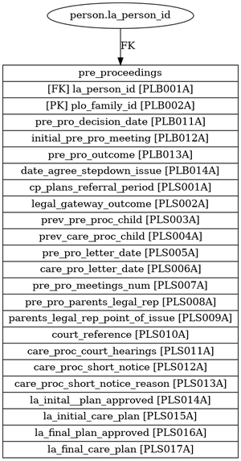<div style='padding-bottom: 50px;'><table style='border-collapse: collapse; border: none;'><colgroup><col style='width: 12%;'/><col style='width: 25%;'/><col style='width: 55%;'/><col style='width: 8%;'/></colgroup><tr><th class='item-ref-column'>Item Ref</th><th class='data-item-column'>Data Item Name</th><th class='field-column'>Guidance</th><th class='returns-column'>Returns</th></tr><tr class="row-PLB001A"><td>PLB001A</td><td>la_person_id</td><td>See PER001A</td><td>SSDA903, CINcensus</td></tr><tr class="row-PLB002A"><td>PLB002A</td><td>plo_family_id</td><td>Unique Identifier number for each family group - a family group is described as a group of children linked by parents all starting and ceasing pre or care proceedings at the same time</td><td>1bSpecified</td></tr><tr class="row-PLB011A"><td>PLB011A</td><td>pre_pro_decision_date</td><td>This is the date of legal meeting / panel that agreed to commence pre-proceedings. The date should be recorded in a DD/MM/YYYY format, i.e. day/month/year as a four digit number.</td><td>1bSpecified</td></tr><tr class="row-PLB012A"><td>PLB012A</td><td>initial_pre_pro_meeting</td><td>This is the first pre-proceedings meeting following the legal meeting / panel that agreed to commence pre-proceedings. The date should be recorded in a DD/MM/YYYY format, i.e. day/month/year as a four digit number.</td><td>1bSpecified</td></tr><tr class="row-PLB013A"><td>PLB013A</td><td>pre_pro_outcome</td><td>Please select:
Decision to Issue Care Proceedings /
Decision to step down
If still in pre-proceedings, please leave blank.</td><td>1bSpecified</td></tr><tr class="row-PLB014A"><td>PLB014A</td><td>date_agree_stepdown_issue</td><td>This is the date of legal meeting / panel that agreed to end pre-proceedings to either step down or issue care proceedings. The date should be recorded in a DD/MM/YYYY format, i.e. day/month/year as a four digit number.</td><td>1bSpecified</td></tr><tr class="row-PLS001A"><td>PLS001A</td><td>cp_plans_referral_period</td><td>Please provide a numeric value for the number of the times the child has been the subject of a Child Protection Plan during this referral period. If none, please put 0.</td><td>1bSpecified</td></tr><tr class="row-PLS002A"><td>PLS002A</td><td>legal_gateway_outcome</td><td>Please select one of these options:
A – Continue with current plan
B – Start pre-proceedings
C – Issue care proceedings
D – Unknown</td><td>1bSpecified</td></tr><tr class="row-PLS003A"><td>PLS003A</td><td>prev_pre_proc_child</td><td>Please provide a numeric value. If there have not been any previous periods, please put 0.</td><td>1bSpecified</td></tr><tr class="row-PLS004A"><td>PLS004A</td><td>prev_care_proc_child</td><td>Please provide a numeric value. If there have not been any previous periods, please put 0.</td><td>1bSpecified</td></tr><tr class="row-PLS005A"><td>PLS005A</td><td>pre_pro_letter_date</td><td>If the case has not been in pre-proceedings, please
leave blank.
Please use the UK date format: DD/MM/YYYY</td><td>1bSpecified</td></tr><tr class="row-PLS006A"><td>PLS006A</td><td>care_pro_letter_date</td><td>If care proceedings have not been issued, please leave
blank.
Please use the UK date format DD/MM/YYYY</td><td>1bSpecified</td></tr><tr class="row-PLS007A"><td>PLS007A</td><td>pre_pro_meetings_num</td><td>Please give a numeric value for the number of meetings that took place with parents, excluding the initial meeting.</td><td>1bSpecified</td></tr><tr class="row-PLS008A"><td>PLS008A</td><td>pre_pro_parents_legal_rep</td><td>Please select Yes / No / Unknown</td><td>1bSpecified</td></tr><tr class="row-PLS009A"><td>PLS009A</td><td>parents_legal_rep_point_of_issue</td><td>Please select Yes / No / Unknown / Not in care proceedings</td><td>1bSpecified</td></tr><tr class="row-PLS010A"><td>PLS010A</td><td>court_reference</td><td>This is the Court number which is given to a family group when care proceedings are issued. This may be stored on the case management system or held in legal files. If the case is not in care proceedings, please leave blank.</td><td>1bSpecified</td></tr><tr class="row-PLS011A"><td>PLS011A</td><td>care_proc_court_hearings</td><td>This includes the initial IRH and final hearing. Please give a numeric value. If case is not in care proceedings, please leave blank.</td><td>1bSpecified</td></tr><tr class="row-PLS012A"><td>PLS012A</td><td>care_proc_short_notice</td><td>Please select Yes / No / Unknown / Not in care proceedings. A short notice application is an urgent application for the court to hear the case within the next 2 – 5 days.</td><td>1bSpecified</td></tr><tr class="row-PLS013A"><td>PLS013A</td><td>care_proc_short_notice_reason</td><td>Please choose the main reason from this list:
(A)
Applications under the Children Act 1989 where without such an order a child’s immediate safety would be compromised, including where there is an immediate threat of child abduction.
(B)
Applications for Emergency Protection Orders where the criteria for such or order is met. (c) Other If a short notice application has not taken place, please select 'No short notice applications'. A short notice application is an urgent application for the court to hear the case within the next 2 – 5 days.</td><td>1bSpecified</td></tr><tr class="row-PLS014A"><td>PLS014A</td><td>la_inital _plan_approved</td><td>Please select Yes / No / Unknown</td><td>1bSpecified</td></tr><tr class="row-PLS015A"><td>PLS015A</td><td>la_initial_care_plan</td><td>Please choose one option from this list: A – Interim / Care Order
B – Interim / Care Order – Placement with parents
C – Adoption
D – Interim / Supervision Order
E – Special Guardianship Order
F – Private Law Order
G – Other If case is not in care proceedings, please select 'Not in care proceedings' Please note ‘Care order – placement with parents’ means that the public care order was granted but that the child remained in their parent’s care, rather than in another placement.</td><td>1bSpecified</td></tr><tr class="row-PLS016A"><td>PLS016A</td><td>la_final_plan_approved</td><td>Please select Yes / No / Unknown</td><td>1bSpecified</td></tr><tr class="row-PLS017A"><td>PLS017A</td><td>la_final_care_plan</td><td>Please choose one option from this list: A – Care Order
B – Care Order – Placement with parents
C – Adoption
D – Supervision Order
E – Special Guardianship Order
F – Private Law Order
G – Other
H – Not yet at final hearing - still in care proceedings If not yet at the final hearing, please select "Not yet at final hearing - still in care proceedings'. This will indicate that the case is still active in care proceedings.</td><td>1bSpecified</td></tr></table></div></div></div><hr style='border: none; border-top: 1px solid #ddd; margin-bottom: 20px;'><div><h2 style='text-align: left; margin-top: 20px;'>Object name: ehcp_requests</h2><div style='display: flex; align-items: flex-start;'>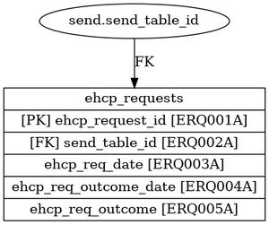<div style='padding-bottom: 50px;'><table style='border-collapse: collapse; border: none;'><colgroup><col style='width: 12%;'/><col style='width: 25%;'/><col style='width: 55%;'/><col style='width: 8%;'/></colgroup><tr><th class='item-ref-column'>Item Ref</th><th class='data-item-column'>Data Item Name</th><th class='field-column'>Guidance</th><th class='returns-column'>Returns</th></tr><tr class="row-ERQ001A"><td>ERQ001A</td><td>ehcp_request_id</td><td>#N/A</td><td></td></tr><tr class="row-ERQ002A"><td>ERQ002A</td><td>send_table_id</td><td>#N/A</td><td></td></tr><tr class="row-ERQ003A"><td>ERQ003A</td><td>ehcp_req_date</td><td>#N/A</td><td>SEN2</td></tr><tr class="row-ERQ004A"><td>ERQ004A</td><td>ehcp_req_outcome_date</td><td>#N/A</td><td>SEN2</td></tr><tr class="row-ERQ005A"><td>ERQ005A</td><td>ehcp_req_outcome</td><td>#N/A</td><td>SEN2</td></tr></table></div></div></div><hr style='border: none; border-top: 1px solid #ddd; margin-bottom: 20px;'><div><h2 style='text-align: left; margin-top: 20px;'>Object name: cp_reviews</h2><div style='display: flex; align-items: flex-start;'>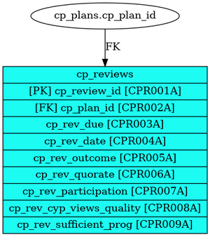<div style='padding-bottom: 50px;'><table style='border-collapse: collapse; border: none;'><colgroup><col style='width: 12%;'/><col style='width: 25%;'/><col style='width: 55%;'/><col style='width: 8%;'/></colgroup><tr><th class='item-ref-column'>Item Ref</th><th class='data-item-column'>Data Item Name</th><th class='field-column'>Guidance</th><th class='returns-column'>Returns</th></tr><tr class="row-CPR001A"><td>CPR001A</td><td>cp_review_id</td><td>None</td><td></td></tr><tr class="row-CPR002A"><td>CPR002A</td><td>cp_plan_id</td><td>None</td><td></td></tr><tr class="row-CPR003A"><td>CPR003A</td><td>cp_rev_due</td><td>None</td><td>Local</td></tr><tr class="row-CPR004A"><td>CPR004A</td><td>cp_rev_date</td><td>None</td><td>CINcensus, AnnexA</td></tr><tr class="row-CPR005A"><td>CPR005A</td><td>cp_rev_outcome</td><td>None</td><td>Local</td></tr><tr class="row-CPR006A"><td>CPR006A</td><td>cp_rev_quorate</td><td>None</td><td>Local</td></tr><tr class="row-CPR007A"><td>CPR007A</td><td>cp_rev_participation</td><td>None</td><td>Local</td></tr><tr class="row-CPR008A"><td>CPR008A</td><td>cp_rev_cyp_views_quality</td><td>None</td><td>1aDraft</td></tr><tr class="row-CPR009A"><td>CPR009A</td><td>cp_rev_sufficient_prog</td><td>None</td><td>1aDraft</td></tr></table></div></div></div><hr style='border: none; border-top: 1px solid #ddd; margin-bottom: 20px;'><div><h2 style='text-align: left; margin-top: 20px;'>Object name: sen_need</h2><div style='display: flex; align-items: flex-start;'>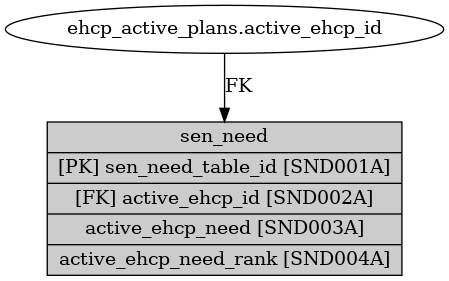<div style='padding-bottom: 50px;'><table style='border-collapse: collapse; border: none;'><colgroup><col style='width: 12%;'/><col style='width: 25%;'/><col style='width: 55%;'/><col style='width: 8%;'/></colgroup><tr><th class='item-ref-column'>Item Ref</th><th class='data-item-column'>Data Item Name</th><th class='field-column'>Guidance</th><th class='returns-column'>Returns</th></tr><tr class="row-SND001A"><td>SND001A</td><td>sen_need_table_id</td><td>#N/A</td><td></td></tr><tr class="row-SND002A"><td>SND002A</td><td>active_ehcp_id</td><td>#N/A</td><td></td></tr><tr class="row-SND003A"><td>SND003A</td><td>active_ehcp_need</td><td>#N/A</td><td>SEN2</td></tr><tr class="row-SND004A"><td>SND004A</td><td>active_ehcp_need_rank</td><td>#N/A</td><td>SEN2</td></tr></table></div></div></div><hr style='border: none; border-top: 1px solid #ddd; margin-bottom: 20px;'><div><h2 style='text-align: left; margin-top: 20px;'>Object name: placement</h2><div style='display: flex; align-items: flex-start;'>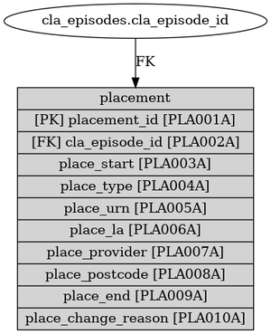<div style='padding-bottom: 50px;'><table style='border-collapse: collapse; border: none;'><colgroup><col style='width: 12%;'/><col style='width: 25%;'/><col style='width: 55%;'/><col style='width: 8%;'/></colgroup><tr><th class='item-ref-column'>Item Ref</th><th class='data-item-column'>Data Item Name</th><th class='field-column'>Guidance</th><th class='returns-column'>Returns</th></tr><tr class="row-PLA001A"><td>PLA001A</td><td>placement_id</td><td>None</td><td></td></tr><tr class="row-PLA002A"><td>PLA002A</td><td>cla_episode_id</td><td>None</td><td></td></tr><tr class="row-PLA003A"><td>PLA003A</td><td>place_start</td><td>None</td><td>SSDA903, AnnexA</td></tr><tr class="row-PLA004A"><td>PLA004A</td><td>place_type</td><td>None</td><td>SSDA903, AnnexA</td></tr><tr class="row-PLA005A"><td>PLA005A</td><td>place_urn</td><td>None</td><td>SSDA903, AnnexA</td></tr><tr class="row-PLA006A"><td>PLA006A</td><td>place_la</td><td>None</td><td>SSDA903, AnnexA</td></tr><tr class="row-PLA007A"><td>PLA007A</td><td>place_provider</td><td>None</td><td>SSDA903</td></tr><tr class="row-PLA008A"><td>PLA008A</td><td>place_postcode</td><td>None</td><td>AnnexA</td></tr><tr class="row-PLA009A"><td>PLA009A</td><td>place_end</td><td>None</td><td>SSDA903</td></tr><tr class="row-PLA010A"><td>PLA010A</td><td>place_change_reason</td><td>None</td><td>SSDA903</td></tr></table></div></div></div><hr style='border: none; border-top: 1px solid #ddd; margin-bottom: 20px;'><div><h2 style='text-align: left; margin-top: 20px;'>Object name: cin_visits</h2><div style='display: flex; align-items: flex-start;'>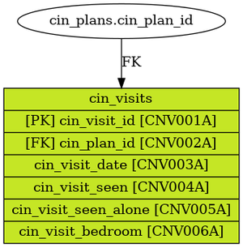<div style='padding-bottom: 50px;'><table style='border-collapse: collapse; border: none;'><colgroup><col style='width: 12%;'/><col style='width: 25%;'/><col style='width: 55%;'/><col style='width: 8%;'/></colgroup><tr><th class='item-ref-column'>Item Ref</th><th class='data-item-column'>Data Item Name</th><th class='field-column'>Guidance</th><th class='returns-column'>Returns</th></tr><tr class="row-CNV001A"><td>CNV001A</td><td>cin_visit_id</td><td>CIN Visit unique ID from system or auto-generated as part of export.</td><td></td></tr><tr class="row-CNV002A"><td>CNV002A</td><td>cin_plan_id</td><td>See CNP001A</td><td></td></tr><tr class="row-CNV003A"><td>CNV003A</td><td>cin_visit_date</td><td>Date of Visit</td><td>Local</td></tr><tr class="row-CNV004A"><td>CNV004A</td><td>cin_visit_seen</td><td>Was the child seen during this visit?</td><td>AnnexA</td></tr><tr class="row-CNV005A"><td>CNV005A</td><td>cin_visit_seen_alone</td><td>Was the child seen alone during this visit?</td><td>Local</td></tr><tr class="row-CNV006A"><td>CNV006A</td><td>cin_visit_bedroom</td><td>Was the child's bedroom seen during this visit?</td><td>Local</td></tr></table></div></div></div><hr style='border: none; border-top: 1px solid #ddd; margin-bottom: 20px;'><div><h2 style='text-align: left; margin-top: 20px;'>Object name: missing</h2><div style='display: flex; align-items: flex-start;'>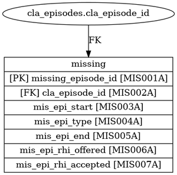<div style='padding-bottom: 50px;'><table style='border-collapse: collapse; border: none;'><colgroup><col style='width: 12%;'/><col style='width: 25%;'/><col style='width: 55%;'/><col style='width: 8%;'/></colgroup><tr><th class='item-ref-column'>Item Ref</th><th class='data-item-column'>Data Item Name</th><th class='field-column'>Guidance</th><th class='returns-column'>Returns</th></tr><tr class="row-MIS001A"><td>MIS001A</td><td>missing_episode_id</td><td>None</td><td></td></tr><tr class="row-MIS002A"><td>MIS002A</td><td>cla_episode_id</td><td>None</td><td></td></tr><tr class="row-MIS003A"><td>MIS003A</td><td>mis_epi_start</td><td>None</td><td>SSDA903, AnnexA</td></tr><tr class="row-MIS004A"><td>MIS004A</td><td>mis_epi_type</td><td>None</td><td>SSDA903, AnnexA</td></tr><tr class="row-MIS005A"><td>MIS005A</td><td>mis_epi_end</td><td>None</td><td>SSDA903, AnnexA</td></tr><tr class="row-MIS006A"><td>MIS006A</td><td>mis_epi_rhi_offered</td><td>None</td><td>AnnexA</td></tr><tr class="row-MIS007A"><td>MIS007A</td><td>mis_epi_rhi_accepted</td><td>None</td><td>AnnexA</td></tr></table></div></div></div><hr style='border: none; border-top: 1px solid #ddd; margin-bottom: 20px;'><div><h2 style='text-align: left; margin-top: 20px;'>Object name: person</h2><div style='display: flex; align-items: flex-start;'>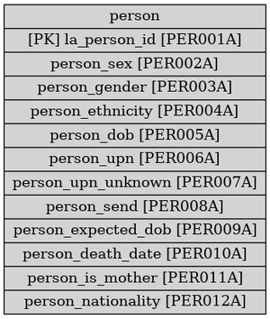<div style='padding-bottom: 50px;'><table style='border-collapse: collapse; border: none;'><colgroup><col style='width: 12%;'/><col style='width: 25%;'/><col style='width: 55%;'/><col style='width: 8%;'/></colgroup><tr><th class='item-ref-column'>Item Ref</th><th class='data-item-column'>Data Item Name</th><th class='field-column'>Guidance</th><th class='returns-column'>Returns</th></tr><tr class="row-PER001A"><td>PER001A</td><td>la_person_id</td><td>This must be a unique ID for each child (no longer than 10 characters) and should be retained from year to year. A child ID should not be reused after a period of time, it should be unique to a single child in your local authority. It can include alphabetic and numeric characters. Do not use non-numeric or non-alphabetic characters. This item is the sole means of DfE computer identification of each child record. The system is currently set to strip out any leading zeros in child identifiers. We would therefore ask local authorities not to use leading zeros in child identifiers.
If you are planning to change child identifiers, for example as part of a new computer scheme, DfE must be advised at an early stage.
If a looked-after child is adopted, and subsequently becomes looked-after again later, they should have two separate unlinked records – one for pre-adoption and one for post-adoption – with two different child identifiers.</td><td>SSDA903, CINcensus</td></tr><tr class="row-PER002A"><td>PER002A</td><td>person_sex</td><td>Sex, as recorded on a birth certificate or in a gender recognition certificate.</td><td>SSDA903</td></tr><tr class="row-PER003A"><td>PER003A</td><td>person_gender</td><td>The DfE do not plan to collect ‘gender identity’, however we understand you may wish to collect this on your own system. Definition
A person’s inner concept of self as male, female, neither or a blend of both. Code set
00 - Not known (for example, question has not been asked, answer was refused)
01 - Man / Boy / Male [systems should display the most appropriate value, e.g. Boy for children, Man for adults, Male if preferred] 02 - Woman / Girl / Female [systems should display the most appropriate value, e.g. Girl for children, Woman for adults, Female if preferred]
09 - Prefer to Self-Describe Codes 10 to 99 to be available for local use but to be regarded as subcodes of 9 (Other). Free text field or locally defined codes to be available for recording individual’s identification where ‘Prefer to Self-Describe’ has been chosen. While there are no plans to transfer this data it is envisaged that, if transfer of codes were to be implemented, only code ‘9’ would be transferred rather than codes ‘11’, ‘12’ etc.</td><td>CINcensus</td></tr><tr class="row-PER004A"><td>PER004A</td><td>person_ethnicity</td><td>We require data on ethnicity for all children. The local authority must not ascribe any ethnicity to the pupil. This information must come from the child, or the parent, guardian or carer.
Where the ethnicity has not yet been collected, this is recorded as ‘NOBT’ (information not yet obtained). Where a child, parent, guardian or carer declines to provide ethnicity data, code ‘REFU’ (refused) is recorded and returned.
Ethnicity should be recorded using one of the DfE main categories shown on the 'Lists' tab, which replicates those used in the school census and the children in need (CIN) return.</td><td>SSDA903, CINcensus</td></tr><tr class="row-PER005A"><td>PER005A</td><td>person_dob</td><td>The date of birth should be recorded in a DD/MM/YYYY format.
If the exact day of birth is not known:
Unknown dates can be a problem for unaccompanied asylum-seeking children, If the day of birth is not known then assume that it was the 15th of the month. Do not use first day of the month as a dummy date of birth.
If the date of birth of an unaccompanied asylum-seeking child is reassessed, and:
• if the age of the child is assessed to be over 18 years, then please report the original date of birth recorded on entry into care rather than amend it to the reassessed date of birth.
• if the age of the child is assessed to be under 18 years, then please report the reassessed date of birth.</td><td>SSDA903, CINcensus</td></tr><tr class="row-PER006A"><td>PER006A</td><td>person_upn</td><td>The UPN must be 13 characters long. The first character is a letter (but cannot be I, O or S). The remaining characters are numeric. For example, H801200001001. If the UPN is temporary, then the last character must be a letter. The UPN field cannot be left blank unless the child is looked-after under an agreed series of short-term placements. For children looked after that have been adopted and subsequently return to being looked-after, the UPN on the child’s pre- and post- adoption records should be different.</td><td>SSDA903</td></tr><tr class="row-PER007A"><td>PER007A</td><td>person_upn_unknown</td><td>If the UPN is unknown, then one of the codes below should be used. These codes are to be used within the UPN field where it is not possible to provide a UPN. They are not entered into a separate field as they are in the CIN Census.If a child is educated outside England, please use UPN unknown code UN3, unless the child has a UPN from previously attending a school in England. If the child is home educated and has previously attended a mainstream school, please provide the UPN allocated earlier.</td><td>SSDA903</td></tr><tr class="row-PER008A"><td>PER008A</td><td>person_send</td><td>Young people who have an EHC plan or had an EHC plan or statement of SEN at the time of completing compulsory education</td><td>NEETandparticipation</td></tr><tr class="row-PER009A"><td>PER009A</td><td>person_expected_dob</td><td>Record the expected date of birth (due date) for a child who is unborn at the time of referral and who remains unborn at 31 March or when the case is closed. If the child is born before 31 March 2023 or before the case is closed, then the return for that child should not include both the date of birth and the expected date of birth.
Please note that users may wish to retain the expected date of birth on their systems, but it must not be included within the census return if the date of birth is present. It will be possible for us to assess whether the child was unborn at the time of the referral if the date of birth is later than the referral date. See section general notes, date fields for date formats.
If a child is stillborn, or the mother suffers a miscarriage (including a chemical pregnancy) or a phantom pregnancy, or there is a termination of the pregnancy, please record the expected date of birth and leave the date of birth blank. The children in need closure date does not need to match the date on the death certificate. The date of death and the final closure date can both be recorded. The reason for closure should be recorded as ‘RC2 died’.</td><td>CINcensus</td></tr><tr class="row-PER010A"><td>PER010A</td><td>person_death_date</td><td>The collection of date of death information reflects the legislation introduced on 1 April 2008, which made reviews into child deaths a statutory requirement. This is required as it shows more clearly where services continue to be provided after a child has died. The final case closure date should also be provided; this may be after the date of death if the case remains open for a short time after the death.
Record the date of death according to the formatting covered in the general notes (see section general notes, date fields), which should be verified from the death certificate.
If a child in need dies outside of the collection period but the case is still open for investigation, the child should be included in the new collection period. The date of death and the final closure date should both be recorded.
If a child died or was stillborn, or there was a miscarriage or termination of the pregnancy before referral to children’s social care services, they should not be included in the children in need census; whether or not services were provided after the death.</td><td>CINcensus</td></tr><tr class="row-PER011A"><td>PER011A</td><td>person_is_mother</td><td>Currently collected for CLA only. Local authorities are asked to indicate whether each looked-after girl is, on 31 March, a mother.
Code set for motherhood status:
0 - Female child is not a mother
1 - Female child is a mother
The motherhood status should be entered for all girls, this includes those currently looked-after and girls who have ceased to be looked-after.
For girls who cease to be looked-after during the year ending 31 March, local authorities are asked to indicate whether each looked-after girl was a mother (1 = yes, 0 = no) at the time of being looked-after. A girl who ceased to be looked-after in the year ending 31 March 2024 should only be recorded as a mother if her child/children was/were born before she left care. The only exception to this is if the pregnancy did not result in a live birth or if the girl was looked-after under an agreed series of short-term placements.
Only data on live births is required (data on pregnancies that do not result in a live birth will not be collected). Live births exclude miscarriages and still births but include neo-natal deaths (which occur within 28 days of birth). A child should be
classified as a mother even if they do not care for the child themselves (for example, if consent was given for the child to be adopted).</td><td>SSDA903</td></tr><tr class="row-PER012A"><td>PER012A</td><td>person_nationality</td><td>Required for UASC</td><td>ADCS_SP</td></tr></table></div></div></div><hr style='border: none; border-top: 1px solid #ddd; margin-bottom: 20px;'><div><h2 style='text-align: left; margin-top: 20px;'>Object name: disability</h2><div style='display: flex; align-items: flex-start;'>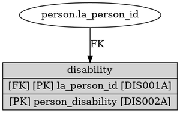<div style='padding-bottom: 50px;'><table style='border-collapse: collapse; border: none;'><colgroup><col style='width: 12%;'/><col style='width: 25%;'/><col style='width: 55%;'/><col style='width: 8%;'/></colgroup><tr><th class='item-ref-column'>Item Ref</th><th class='data-item-column'>Data Item Name</th><th class='field-column'>Guidance</th><th class='returns-column'>Returns</th></tr><tr class="row-DIS001A"><td>DIS001A</td><td>la_person_id</td><td>See PER001A</td><td>SSDA903, CINcensus</td></tr><tr class="row-DIS002A"><td>DIS002A</td><td>person_disability</td><td>The Disability Discrimination Act 2005 (DDA) defines a disabled person as a person with a physical or mental impairment which has a substantial and long-term adverse effect on his/her ability to carry out normal day-to-day activities. The condition must have lasted, or be likely to last at least 12 months in order to be counted as a disability.
Certain conditions are not regarded as impairments for the purposes of the act:
• addiction to, or dependency on, alcohol, nicotine, or any other substance (other than as a result of the substance being medically prescribed);
• the condition known as seasonal allergic rhinitis (hay fever), except where it aggravates the effect of another condition;
• tendency to start fires;
• tendency to steal;
• tendency to physically or sexually abuse other persons;
• exhibitionism;
• voyeurism
In addition, disfigurements such as tattoos, non-medical body piercing, or something attached through such piercing, are not regarded as having a substantial adverse effect on the person’s ability to carry out normal day-to-day activities.
If a child is disabled or becomes disabled at any time during the collection year, record all the relevant disabilities that have affected the child. For example, children may have multiple disabilities in which case more than one category from the below list can be selected. ‘Other DDA’ can also be used in conjunction with any of the other categories.
If your MIS does not allow for the identification of individual disabilities, then the code ‘Other DDA’ may be used for all children with a disability. However, this must be recorded in your COLLECT return level notes so your data can be analysed appropriately.
If a child has no disability, do not leave this item blank; use the code ‘NONE’. However, if a child is unborn then the disability item should be left blank.</td><td>CINcensus</td></tr></table></div></div></div><hr style='border: none; border-top: 1px solid #ddd; margin-bottom: 20px;'><div><h2 style='text-align: left; margin-top: 20px;'>Object name: address</h2><div style='display: flex; align-items: flex-start;'>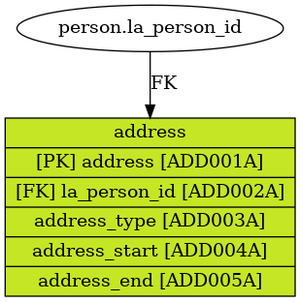<div style='padding-bottom: 50px;'><table style='border-collapse: collapse; border: none;'><colgroup><col style='width: 12%;'/><col style='width: 25%;'/><col style='width: 55%;'/><col style='width: 8%;'/></colgroup><tr><th class='item-ref-column'>Item Ref</th><th class='data-item-column'>Data Item Name</th><th class='field-column'>Guidance</th><th class='returns-column'>Returns</th></tr><tr class="row-ADD001A"><td>ADD001A</td><td>address</td><td>Address detail</td><td>Local</td></tr><tr class="row-ADD002A"><td>ADD002A</td><td>la_person_id</td><td>See PER001A</td><td>SSDA903, CINcensus</td></tr><tr class="row-ADD003A"><td>ADD003A</td><td>address_type</td><td>Home/ Placement/ Primary/ Secondary</td><td>Local</td></tr><tr class="row-ADD004A"><td>ADD004A</td><td>address_start</td><td>Date person started living at the address</td><td>Local</td></tr><tr class="row-ADD005A"><td>ADD005A</td><td>address_end</td><td>Date person left the address</td><td>Local</td></tr><tr class="row-ADD006A"><td>ADD006A</td><td>address_postcode</td><td>You should provide a current post code for most persons and every effort should be made to obtain valid details. If it is not possible to get the post code, you should leave this field blank and provide an explanatory note.</td><td>Local</td></tr></table></div></div></div><hr style='border: none; border-top: 1px solid #ddd; margin-bottom: 20px;'><div><h2 style='text-align: left; margin-top: 20px;'>Object name: cla_episodes</h2><div style='display: flex; align-items: flex-start;'>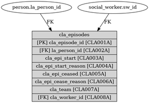<div style='padding-bottom: 50px;'><table style='border-collapse: collapse; border: none;'><colgroup><col style='width: 12%;'/><col style='width: 25%;'/><col style='width: 55%;'/><col style='width: 8%;'/></colgroup><tr><th class='item-ref-column'>Item Ref</th><th class='data-item-column'>Data Item Name</th><th class='field-column'>Guidance</th><th class='returns-column'>Returns</th></tr><tr class="row-CLA001A"><td>CLA001A</td><td>cla_episode_id</td><td>None</td><td></td></tr><tr class="row-CLA002A"><td>CLA002A</td><td>la_person_id</td><td>See PER001A</td><td>SSDA903, CINcensus</td></tr><tr class="row-CLA003A"><td>CLA003A</td><td>cla_epi_start</td><td>This item records the date that each episode began. For the first episode in the year, this date can be in the current data year, or an earlier data year. When loading data using CSV or XML, dates must be recorded in a DD/MM/YYYY format. Example: 4 November 2023 should be entered as 04/11/2023.
Exceptionally, once loaded, the dates in the episode fields will appear as DD/MM/YY (year as a 2-digit number). Manual amendments to episode dates may be made using either format DD/MM/YY or DD/MM/YYYY, though the latter will appear as DD/MM/YY when saved). This is intended to make the episodes easier to read and manually amend, particularly when a record contains several episodes.
Where episodes are consecutive, the new episode must start on the same day that the previous episode finished.
When recording an agreement to provide a series of short-term placements (legal status V3/V4), enter in this field the date the first placement under the agreement began. For further information about children being looked-after under a series of short-term placements see Section 1.10.
Where an episode began in a previous statistical year, but is still open on 31 March, do not complete ‘Reason Episode Ceased’ or ‘Date Episode Ceased’. The following year’s record must then start with the same episode details showing the actual date the episode commenced if the episode subsequently closes, both the ‘Reason Episode Ceased’ and the ‘Date Episode Ceased’ should be recorded).
Episodes cannot start and end on the same day. If a child has two changes of legal status in one day only the second legal status is recorded. Similarly, in the unlikely event of two placements starting on the same day, only the status at the end of the day should be recorded. In such cases we no longer regard the first move of the day as being a placement. It follows from this that an essential component of a placement for SSDA903 purposes is that a placement must involve an overnight stay. A ‘placement’ that does not include an overnight stay should be regarded as a ‘visit’ and not shown on the SSDA903.</td><td>SSDA903</td></tr><tr class="row-CLA004A"><td>CLA004A</td><td>cla_epi_start_reason</td><td>Use Code S where a child is starting to be looked-after for the first time, or had previously ceased to be looked-after, and is now starting to be looked-after again. Also use code S when recording agreements to provide short-term placements (legal status V4), and for individual breaks under such an agreement, if these are being recorded separately (legal status V3).
Use Code L where there is a change of legal status, but the placement does not change. By ‘legal status’ we mean the legal status underlying the fact that the child is looked-after.
Use Code P where there is a change of placement and carer, but the legal status does not change. This would include the following scenarios:
• Move from one foster carer to another foster carer (for example, U3 to another U3 placement type code).
• Move from a foster carer to a children’s home (for example, U3 to K2 placement types).
In both scenarios there has been a change of carer. When a child is living independently, a new episode should be created each time they move, and code P should be used.
Use Code T where there is a change of placement, but the child remains with the same carer and the legal status does not change. This would include the following scenarios:
• Child moves to a new house with current foster carer (either inside or outside of local authority boundary).
• Child remains with same carer or within same setting but either the URN of the setting changes or the provider type changes (for example, a foster carer moves from an IFA to the local authority provider, or a placement for adoption transferring to a regional adoption agency, or an unregulated independent or semi independent setting registering with Ofsted).
In both scenarios, the child has remained with the same carer, but for some other reason, a new placement is required on the SSDA903.
Use Code B where both legal status and placement change, with a change of carer, on the same day. The two changes do not need to be simultaneous or consequent one upon the other. The code simply reflects that there was a change in carer and a change in legal status, for whatever reason, on the same day.
Use Code U where both legal status and placement change on the same day, but the child remains with the same carer. The two changes do not need to be simultaneous or consequent one upon the other. The code simply reflects that there was a change in placement and a change in legal status, for whatever reason, on the same day.</td><td>SSDA903</td></tr><tr class="row-CLA005A"><td>CLA005A</td><td>cla_epi_ceased</td><td>None</td><td>SSDA903, AnnexA</td></tr><tr class="row-CLA006A"><td>CLA006A</td><td>cla_epi_cease_reason</td><td>None</td><td>SSDA903, AnnexA</td></tr><tr class="row-CLA007A"><td>CLA007A</td><td>cla_team</td><td>None</td><td>AnnexA</td></tr><tr class="row-CLA008A"><td>CLA008A</td><td>cla_worker_id</td><td>None</td><td>AnnexA</td></tr></table></div></div></div><hr style='border: none; border-top: 1px solid #ddd; margin-bottom: 20px;'><div><h2 style='text-align: left; margin-top: 20px;'>Object name: cin_plans</h2><div style='display: flex; align-items: flex-start;'>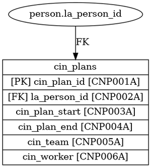<div style='padding-bottom: 50px;'><table style='border-collapse: collapse; border: none;'><colgroup><col style='width: 12%;'/><col style='width: 25%;'/><col style='width: 55%;'/><col style='width: 8%;'/></colgroup><tr><th class='item-ref-column'>Item Ref</th><th class='data-item-column'>Data Item Name</th><th class='field-column'>Guidance</th><th class='returns-column'>Returns</th></tr><tr class="row-CNP001A"><td>CNP001A</td><td>cin_plan_id</td><td>CIN Plan unique ID from system or auto-generated as part of export.</td><td></td></tr><tr class="row-CNP002A"><td>CNP002A</td><td>la_person_id</td><td>See PER001A</td><td>SSDA903, CINcensus</td></tr><tr class="row-CNP003A"><td>CNP003A</td><td>cin_plan_start</td><td>Start Date of CIN Plan The CIN plan start date and CIN plan end date should be recorded.
A CIN plan should be developed where the outcome of an assessment is that a local authority children’s social care should provide services. The CIN plan sets out which organisations and agencies will provide which services to the child and family. The plan should also set clear measurable outcomes for the child and expectations for the parent(s) or carer(s). More information on CIN plans is provided in ‘Working together to safeguard children’.
A child can have one, more than one or no CIN plan(s) – but can only have one at a time.
CIN plans do not include other plans such as leaving care support or adoption support.
We are aware there will be some variation in how local authorities record this data and part of the reason for collecting the data item is to help the department understand these differences.</td><td>CINcensus</td></tr><tr class="row-CNP004A"><td>CNP004A</td><td>cin_plan_end</td><td>End Date of CIN Plan The CIN plan start date and CIN plan end date should be recorded.
A CIN plan should be developed where the outcome of an assessment is that a local authority children’s social care should provide services. The CIN plan sets out which organisations and agencies will provide which services to the child and family. The plan should also set clear measurable outcomes for the child and expectations for the parent(s) or carer(s). More information on CIN plans is provided in ‘Working together to safeguard children’.
A CIN plan should be recorded as ended when the period of the CIN plan ends. This may be because the child becomes the subject of a child protection plan; the child becomes looked after; or the child ceases receiving support from children’s social services (due to no longer needing support, being stepped down to early help, or reaching adulthood).
A child can have one, more than one or no CIN plan(s) – but can only have one at a time.
CIN plans do not include other plans such as leaving care support or adoption support.
We are aware there will be some variation in how local authorities record this data and part of the reason for collecting the data item is to help the department understand these differences.</td><td>CINcensus</td></tr><tr class="row-CNP005A"><td>CNP005A</td><td>cin_team</td><td>Allocated Team responsible for CIN Plan</td><td>AnnexA</td></tr><tr class="row-CNP006A"><td>CNP006A</td><td>cin_worker_id</td><td>Allocated worker responsible for CIN Plan</td><td>AnnexA</td></tr></table></div></div></div><hr style='border: none; border-top: 1px solid #ddd; margin-bottom: 20px;'><div><h2 style='text-align: left; margin-top: 20px;'>Object name: s47_enquiry_icpc</h2><div style='display: flex; align-items: flex-start;'>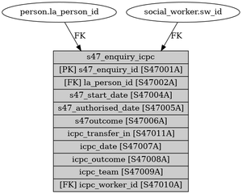<div style='padding-bottom: 50px;'><table style='border-collapse: collapse; border: none;'><colgroup><col style='width: 12%;'/><col style='width: 25%;'/><col style='width: 55%;'/><col style='width: 8%;'/></colgroup><tr><th class='item-ref-column'>Item Ref</th><th class='data-item-column'>Data Item Name</th><th class='field-column'>Guidance</th><th class='returns-column'>Returns</th></tr><tr class="row-S47001A"><td>S47001A</td><td>s47_enquiry_id</td><td>Section 57 Enquiry unique ID from system or auto-generated as part of export.</td><td></td></tr><tr class="row-S47002A"><td>S47002A</td><td>la_person_id</td><td>See PER001A</td><td>SSDA903, CINcensus</td></tr><tr class="row-S47004A"><td>S47004A</td><td>s47_start_date</td><td>This item refers to enquiries conducted under the provisions of section 47 of the Children Act 1989. The objective of such enquiries is to determine whether action is needed to promote and safeguard the welfare of the child or children who are the subject of the enquiries. An assessment should also be recorded on each occasion a child is subject to a section 47 enquiry.
We are aware that in some local authorities a section 47 enquiry is automatically triggered alongside the assessment. In these cases, where both resulted in no further action, a section 47 should not be recorded. Enter the date of the strategy discussion at which the section 47 enquiries were initiated, using the formatting covered in the general notes. This can be a non-working day.</td><td>CINcensus</td></tr><tr class="row-S47005A"><td>S47005A</td><td>s47_authorised_date</td><td>Enter the actual date on which the S47 Enquiry is completed and authorised.</td><td>Local</td></tr><tr class="row-S47006A"><td>S47006A</td><td>s47outcome</td><td>Enter the outcome of the Section 47 Enquiry:
- Initial CP Conference
- Other Agency to Monitor Child's Welfare
- NFA - Continue With Family Assessment
- Initiate Legal Action
- Provision of Services (s17)
- Provision of Short Break Care (s17)
- No Further Action
- Other Outcome</td><td>CINcensus</td></tr><tr class="row-S47007A"><td>S47007A</td><td>icpc_date</td><td>Enter the date on which the initial child protection conference takes place, using the formatting covered in the general notes. If the initial child protection conference has not yet taken place, please leave blank.</td><td>CINcensus</td></tr><tr class="row-S47008A"><td>S47008A</td><td>icpc_outcome</td><td>Enter the outcome of the Initial CP Conference:
- Child/ young person to be subject of a Child Protection Plan
- Do not start Child Protection Plan</td><td>AnnexA</td></tr><tr class="row-S47009A"><td>S47009A</td><td>icpc_team</td><td>Allocated Team responsible for S47 Enquiry/ ICPC</td><td>AnnexA</td></tr><tr class="row-S47010A"><td>S47010A</td><td>icpc_worker_id</td><td>Allocated worker responsible for S47 Enquiry/ ICPC</td><td>AnnexA</td></tr></table></div></div></div><hr style='border: none; border-top: 1px solid #ddd; margin-bottom: 20px;'><div><h2 style='text-align: left; margin-top: 20px;'>Object name: care_leavers</h2><div style='display: flex; align-items: flex-start;'>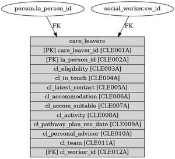<div style='padding-bottom: 50px;'><table style='border-collapse: collapse; border: none;'><colgroup><col style='width: 12%;'/><col style='width: 25%;'/><col style='width: 55%;'/><col style='width: 8%;'/></colgroup><tr><th class='item-ref-column'>Item Ref</th><th class='data-item-column'>Data Item Name</th><th class='field-column'>Guidance</th><th class='returns-column'>Returns</th></tr><tr class="row-CLE001A"><td>CLE001A</td><td>care_leaver_id</td><td>None</td><td></td></tr><tr class="row-CLE002A"><td>CLE002A</td><td>la_person_id</td><td>See PER001A</td><td>SSDA903, CINcensus</td></tr><tr class="row-CLE003A"><td>CLE003A</td><td>cl_eligibility</td><td>None</td><td>AnnexA</td></tr><tr class="row-CLE004A"><td>CLE004A</td><td>cl_in_touch</td><td>None</td><td>AnnexA</td></tr><tr class="row-CLE005A"><td>CLE005A</td><td>cl_latest_contact</td><td>None</td><td>AnnexA</td></tr><tr class="row-CLE006A"><td>CLE006A</td><td>cl_accommodation</td><td>None</td><td>AnnexA</td></tr><tr class="row-CLE007A"><td>CLE007A</td><td>cl_accom_suitable</td><td>None</td><td>AnnexA</td></tr><tr class="row-CLE008A"><td>CLE008A</td><td>cl_activity</td><td>None</td><td>AnnexA</td></tr><tr class="row-CLE009A"><td>CLE009A</td><td>cl_pathway_plan_rev_date</td><td>None</td><td>AnnexA</td></tr><tr class="row-CLE010A"><td>CLE010A</td><td>cl_personal_advisor</td><td>None</td><td>AnnexA</td></tr><tr class="row-CLE011A"><td>CLE011A</td><td>cl_team</td><td>None</td><td>AnnexA</td></tr><tr class="row-CLE012A"><td>CLE012A</td><td>cl_worker_id</td><td>None</td><td>AnnexA</td></tr></table></div></div></div><hr style='border: none; border-top: 1px solid #ddd; margin-bottom: 20px;'><div><h2 style='text-align: left; margin-top: 20px;'>Object name: voice_of_child</h2><div style='display: flex; align-items: flex-start;'>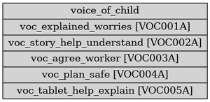<div style='padding-bottom: 50px;'><table style='border-collapse: collapse; border: none;'><colgroup><col style='width: 12%;'/><col style='width: 25%;'/><col style='width: 55%;'/><col style='width: 8%;'/></colgroup><tr><th class='item-ref-column'>Item Ref</th><th class='data-item-column'>Data Item Name</th><th class='field-column'>Guidance</th><th class='returns-column'>Returns</th></tr><tr class="row-VOC001A"><td>VOC001A</td><td>la_person_id</td><td>None</td><td>SSDA903, CINcensus</td></tr><tr class="row-VOC002A"><td>VOC002A</td><td>voc_explained_worries</td><td>None</td><td>1bDraft</td></tr><tr class="row-VOC003A"><td>VOC003A</td><td>voc_story_help_understand</td><td>None</td><td>1bDraft</td></tr><tr class="row-VOC004A"><td>VOC004A</td><td>voc_agree_worker</td><td>None</td><td>1bDraft</td></tr><tr class="row-VOC005A"><td>VOC005A</td><td>voc_plan_safe</td><td>None</td><td>1bDraft</td></tr><tr class="row-VOC006A"><td>VOC006A</td><td>voc_tablet_help_explain</td><td>#N/A</td><td>1bDraft</td></tr></table></div></div></div><hr style='border: none; border-top: 1px solid #ddd; margin-bottom: 20px;'><div><h2 style='text-align: left; margin-top: 20px;'>Object name: mother</h2><div style='display: flex; align-items: flex-start;'>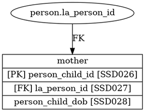<div style='padding-bottom: 50px;'><table style='border-collapse: collapse; border: none;'><colgroup><col style='width: 12%;'/><col style='width: 25%;'/><col style='width: 55%;'/><col style='width: 8%;'/></colgroup><tr><th class='item-ref-column'>Item Ref</th><th class='data-item-column'>Data Item Name</th><th class='field-column'>Guidance</th><th class='returns-column'>Returns</th></tr><tr class="row-MOT001A"><td>MOT001A</td><td>person_child_id</td><td>The unique identifier of the mother's child</td><td>Local</td></tr><tr class="row-MOT002A"><td>MOT002A</td><td>la_person_id</td><td>See PER001A</td><td>SSDA903, CINcensus</td></tr><tr class="row-MOT003A"><td>MOT003A</td><td>person_child_dob</td><td>Currently collected for CLA only, only first child dob collected</td><td>SSDA903</td></tr></table></div></div></div><hr style='border: none; border-top: 1px solid #ddd; margin-bottom: 20px;'>
<script>
window.addEventListener('load', function() {
  // Function to check if a row matches a category and colour it
  function colourRow(row, returns) {
    // Check if any of the return elements matches a category
    for (var i = 0; i < returns.length; i++) {
      if (returns_categories[returns[i].trim()]) { // .trim() is used to remove potential leading/trailing whitespaces
        // If it matches, colour the row and stop checking
        row.style.backgroundColor = returns_categories[returns[i].trim()]["colour"];
        return;
      }
    }
  }

  // Go through all rows
  var rows = document.getElementsByTagName("tr");

  for (var i = 0; i < rows.length; i++) {
    // Get the returns column and split it by ", "
    var returns = rows[i].children[3].innerText.split(", ").map(item => item.trim()); // Update the column index to 3

    // Apply the colourRow function
    colourRow(rows[i], returns);
  }
});
</script>
</body></html>